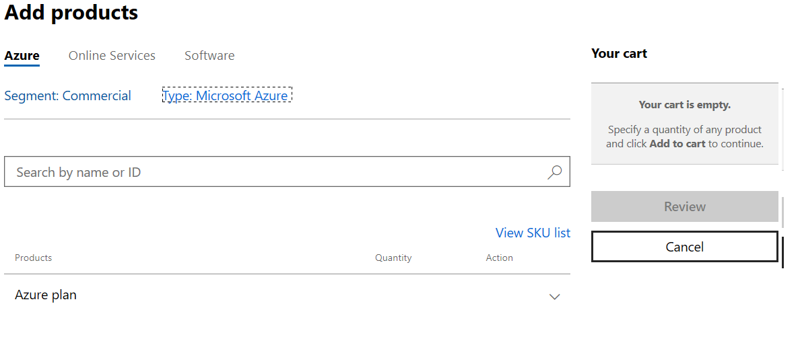
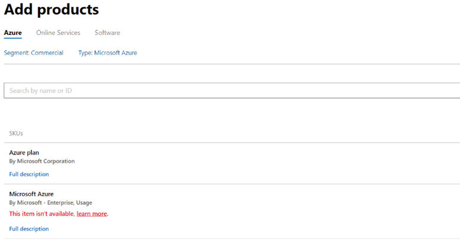
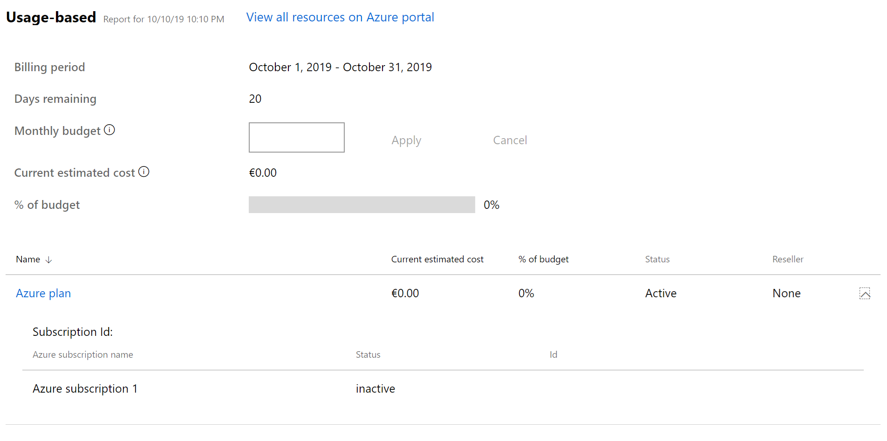
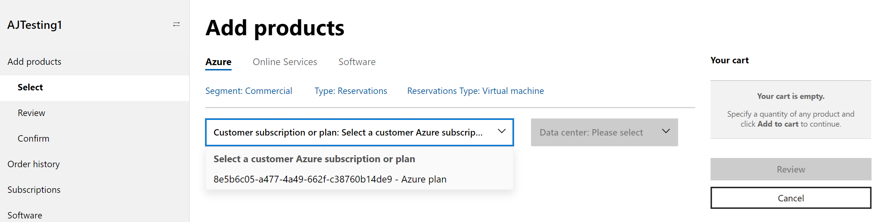
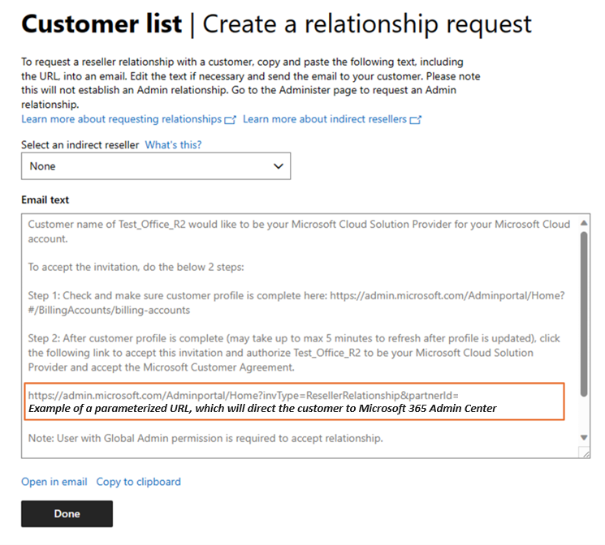
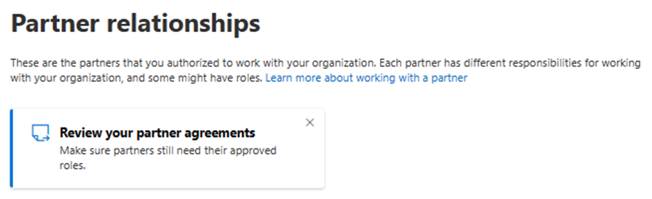
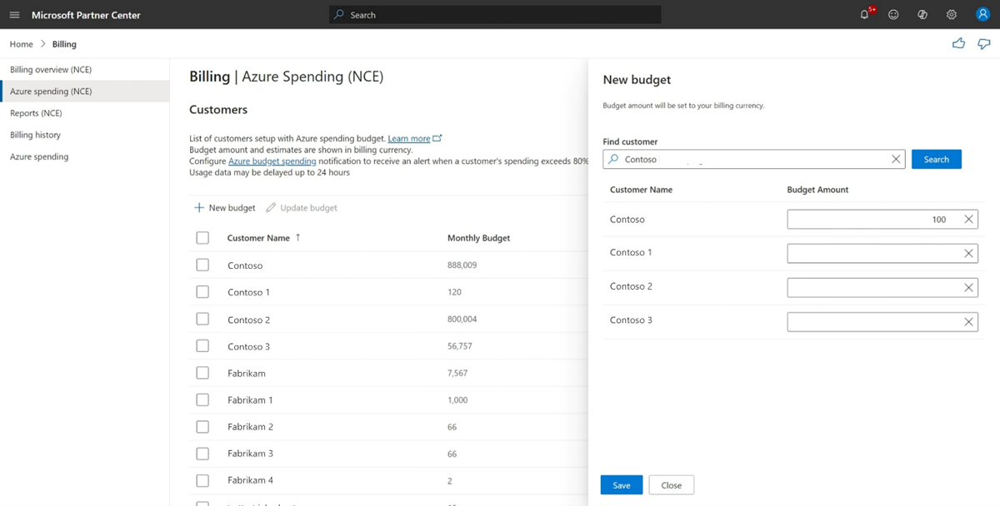
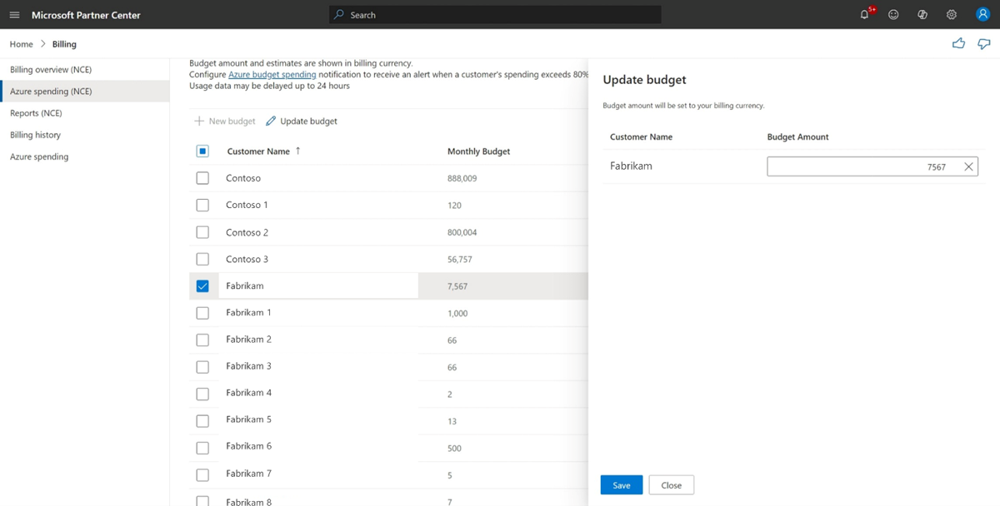
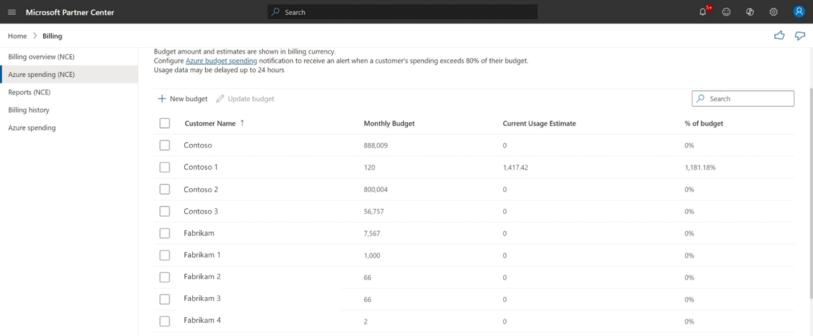
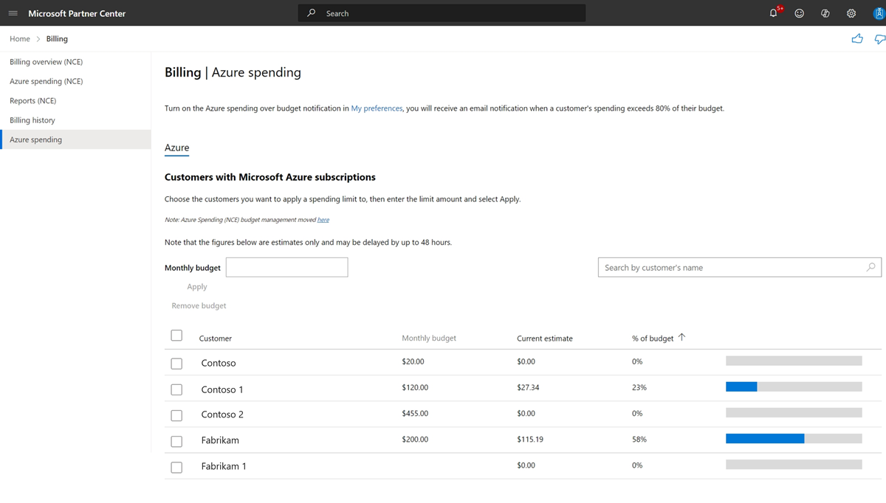

This guide is the practical companion to The Copilot Cowork Power User Guide. That guide covers how to run Cowork; this one covers the billing plumbing you need in place before you can resell the Azure-metered pieces of the AI stack — Copilot Studio message packs, Azure AI Foundry consumption, and any Azure workload a customer needs alongside their M365 seats.
Most M365-only partners have never once created an Azure billing account — and the first time it matters is usually mid-deal, with a customer waiting.
If your practice has been built around M365 seats — Business Premium, E3/E5, and now Copilot — you may have gone years without touching the Azure side of Partner Center. That was fine until AI consumption showed up. Copilot Studio message packs and Azure AI Foundry model consumption don't bill against an M365 seat. They bill against an Azure subscription. No Azure plan, no way to resell or bill for either one.
You can't quote it if you can't bill it. A customer who wants Copilot Studio agents talking to a custom Azure AI Foundry model needs an Azure plan in place first — and if you're the partner of record for their M365 estate, that Azure plan should be yours to provision, not left to a customer's IT generalist who opens a free Azure account on a personal credit card.
The failure mode is invisible until it isn't. A partner without an Azure practice discovers this gap the first time a customer asks "can you just turn on the AI agent thing" and the honest answer is "not until we set up your Azure billing" — a sentence no SMB-focused rep wants to say for the first time in front of the customer.
This guide exists so that sentence never has to happen live. Work through it once against a test customer, and Azure plan setup becomes a five-minute step in your onboarding checklist instead of a research project.
Every point of confusion in this process traces back to conflating these four terms. Get them straight once and the rest of this guide reads like a checklist instead of a mystery.
| Term | What it actually is | Who owns it |
|---|---|---|
| MPA Microsoft Partner Agreement | The agreement that makes you eligible to transact as a CSP partner at all. It's what you sign, once, with Microsoft. | The partner |
| MCA Microsoft Customer Agreement | The agreement your customer must accept before you can sell them an Azure plan. No MCA acceptance, no Azure purchase — full stop. | The customer |
| Billing account | The top-level container Microsoft creates for you under your MPA. Holds one billing profile per currency and can hold up to 10,000 subscriptions. This is your structure, not the customer's — don't confuse it with the customer-facing Azure plan below. | The partner |
| Azure plan | The container created under the customer's MCA that unlocks the full pay-as-you-go Azure catalog for them. One or more Azure subscriptions live inside it. A customer can have more than one Azure plan. | The customer (provisioned by you) |
| Azure subscription | The actual billable container resources get deployed into — VMs, storage, AI Foundry projects, everything. Lives inside an Azure plan. Created and configured in the Azure portal, not Partner Center. | The customer |
You (MPA) sell the customer (MCA) an Azure plan, and inside that plan you or the customer create Azure subscriptions where resources actually run.
Before you attempt any of the steps in this guide, know which of these three you are. It changes almost every workflow below.
You have a direct billing relationship with Microsoft. You can create Azure plans, attest MCA acceptance yourself, and transact end-to-end without going through another partner.
You have a direct billing relationship with Microsoft and you sell through a network of indirect resellers. You can attest MCA and create Azure plans for your own end customers, and your resellers work through you for theirs.
You cannot attest MCA or create an Azure plan directly. Every customer relationship and every MCA attestation has to be created or approved through your indirect provider. If you're in this category, Section 7's indirect reseller playbook is the one you'll use most.
If you're not sure which one you are, check Partner Center → Settings → Account settings — your program type is listed there, or ask your distributor (if you buy through TD SYNNEX or another distributor, you're almost certainly an indirect reseller for CSP purposes).
This is the core motion. It assumes a direct bill or indirect provider partner with an existing customer relationship already in Partner Center. (Indirect resellers: read Section 7 first — you'll do the first half of this through your provider.)

You can't name the subscription during purchase. There's no "friendly name" field at checkout — set it afterward by editing the subscription in Partner Center or via the API. Don't go looking for a naming field mid-purchase; it doesn't exist yet.
It's a one-way door on the old offer. Once you purchase an Azure plan for a customer, you can no longer buy the legacy "Microsoft Azure" (MS-AZR-0145p) offer for them — all future subscriptions for that customer go through the Azure plan. If you try anyway, Partner Center shows an explicit "Add products" error.

Partner Center purchases the Azure plan. The Azure subscription inside it — the thing resources actually deploy into — is created in the Azure portal, not Partner Center:
To manage the customer's resources and subscriptions afterward, you need Admin On Behalf Of (AOBO) privileges — see Section 10 for exactly how that's granted.

Reservations must attach to an active Azure plan — buy the plan first if the customer doesn't have one yet.
Reservation scope in the Partner Center UI is limited to Shared. If the customer needs a single-subscription scope (common for cost-allocation-sensitive customers), do that step in the Azure portal instead, not Partner Center.

Nothing purchases until this is done. There are two paths — which one you use depends on your partner type and how hands-on you want the customer to be.
As of July 10, 2025, partner attestation moved exclusively to a new enhanced attestation API. The old UI-based attestation and the older API version are both retired for direct bill and indirect provider partners. If a tutorial, blog post, or old internal SOP shows attesting MCA through a simple Partner Center screen, it's describing a workflow that no longer exists.
You confirm the customer's acceptance on their behalf through the Partner Center enhanced attestation API. Requires the Admin agent or Sales agent role. Indirect resellers cannot use this path at all — see Section 7.
After you attest, the customer's primary contact receives an automated Microsoft confirmation email within 30 minutes. Be ready for the customer to ask you, not Microsoft, what that email means — they're directed back to their partner of record.
You send the customer to accept the agreement themselves in the Microsoft 365 Admin Center. This is the only path available to indirect resellers, and it's also the cleanest audit trail if a customer ever questions whether they agreed to anything.
https://admin.microsoft.com/AdminPortal/Home?ref=/BillingAccounts/agreement, and the credentials from step 4.

If you try to place an order for a customer you haven't confirmed, Partner Center will interrupt the order and prompt you to enter the accepting individual's first name, last name, email, optional phone number, and the acceptance date (which can't be set in the future) — then Save to unblock the order.
The scenario every M365-only partner eventually hits: a prospect with no Microsoft tenant of any kind, who needs both an M365 estate and, soon after, an Azure plan.
You can also create a tenant standalone, outside a customer purchase flow, via Partner Center → Settings → Account settings → Tenants → Create new tenant — useful for pre-provisioning a tenant ahead of a signed deal.
These are the situations that don't show up in the happy-path documentation but that a real SMB practice runs into regularly.
You cannot create an Azure plan or attest MCA acceptance directly — Partner Center will not let you. Your indirect provider (distributor) must create the customer relationship and complete attestation on your behalf via their own Partner Center or API access.
What to actually do: confirm with your distributor which of the two MCA paths they use for you (attestation vs. customer direct acceptance), get the customer relationship established through them first, and only then attempt the Azure plan purchase against that customer in your own Partner Center view.
Microsoft's only step-by-step migration article for this scenario is archived, marked no-index, and dated 2019 — treat any specific steps from it as directionally correct at best, not current. The general shape hasn't changed (assess the existing subscription, move ASM-era resources to ARM if any remain, then move the resources into a new CSP Azure plan subscription), but the actual mechanics now run through Azure's subscription "move" / billing-change tooling. For anything beyond a dev/test subscription, open a case with Microsoft or your distributor before touching a production subscription's billing — a botched billing move can interrupt running resources.
EA and CSP can coexist in the same Entra tenant — a customer might run Azure under EA while you sell them M365 (or additional Azure) under CSP. In practice, watch for two things: two different partners of record creating confusion about who owns what, and overlapping admin roles where both the EA partner and the CSP partner have standing access. This isn't a blocked configuration, but it isn't a documented one either — validate the specific setup with Microsoft or your distributor before quoting it as a clean migration path, rather than assuming it behaves identically to a single-agreement tenant.
Fully supported, no special gate — a customer can have more than one Azure plan (for example, a production plan and a dev/test plan, or one per department/cost center). Just repeat the Section 4 purchase flow; each plan is independent for budgeting and subscription purposes.
This covers both "customer switches partners" and "we got acquired and need to move our book." As of the May 18, 2026 update to this flow, it's more automated than it used to be:
If you need Azure for your own internal use — not to resell — Partner Center's customer-facing Azure plan flow doesn't apply to you. Go directly to the Azure portal instead, and make sure the account you're signed in as holds the Billing account owner role; that role is required to acquire Azure subscriptions through the direct motion in the portal.
If your M365 practice is used to setting a sell price on top of a wholesale cost, the Azure plan doesn't work that way. There's no manual markup slider on Azure plan consumption. Instead, partners earn margin through Partner Earned Credit (PEC) — a credit tied to the partner retaining active admin permissions on the customer's tenant, rather than to a price you set.
Practically, this means the commercial lever you have on an Azure plan isn't "what do I charge above cost" — it's "am I actually providing ongoing management and keeping delegated access in place." Losing your admin relationship on a customer's tenant doesn't just cost you support visibility; it can cost you the credit itself.
The exact credit percentage and qualifying-access requirements are set by Microsoft and have moved over time. Don't repeat a specific number to a customer or in a proposal without checking the current Partner Earned Credit documentation first — this section is here so you know the shape of the model, not to be your source of truth on the rate.
Azure plan consumption is usage-based — there's no seat count to sanity-check against. Set this up for every customer on day one, not after the first surprising invoice.

Only customers with an active Azure plan who are currently working with you appear here — a customer who's transferred to another partner drops off the list.
Same screen: check the customer's box, select Update budget, adjust (or clear) the amount in the side panel, and Save.

You get an email every 7 days once a customer's usage sits between 80% and 100% of budget. You get nothing once they cross 100% — and critically, services keep running regardless of budget. A budget in Partner Center is a monitoring tool, not a spending cap. If a customer needs a hard stop, that has to be engineered separately (Azure-side cost alerts and automation, or a support conversation about resource-level limits) — Partner Center will not shut anything off for you.
To configure alert delivery: Partner Center → Notifications (bell icon) → My preferences → set your email address and language, then check the relevant boxes under the Billing workspace notification preferences.
Spending estimates refresh roughly every 24 hours and run about a day behind actual usage — treat them as directional, not as the final invoice. They also exclude taxes, credits, and other fees.

Still have pre-NCE (legacy) Azure subscriptions on the books? They're managed on a separate Azure spending tab, not Azure spending (NCE) — same Billing workspace, simpler flow (find the customer, enter a budget amount, select Apply). Don't spend time hunting for legacy customers on the NCE tab; they won't be there.

| Action | Required role | Who holds it |
|---|---|---|
| Purchase an Azure plan | User management admin or Sales agent | Partner |
| Confirm/attest MCA acceptance | Admin agent or Sales agent | Partner |
| Set or manage Azure spending budgets | Admin agent | Partner |
| Create or approve a partner-to-partner transfer | Admin agent | Partner |
| Accept MCA / reseller relationship (direct acceptance) | Global admin (or delegated authority) | Customer |
| Manage the customer's actual Azure resources day-to-day | Admin On Behalf Of (AOBO), granted via GDAP | Partner, scoped by the customer |
Modern practice is to grant partner engineers access through Granular Delegated Admin Privileges (GDAP) — a scoped security group with least-privilege RBAC roles (typically Owner on the specific Azure subscription) rather than a blanket admin-agent relationship across the whole tenant. If your practice is still using broad Delegated Admin Privileges (DAP) out of habit, this is worth tightening — GDAP is both the current Microsoft guidance and the easier story to tell a security-conscious customer.
| What you see | What's actually happening | Fix |
|---|---|---|
| Order blocked, prompted for agreement acceptance details mid-checkout | Customer's MCA acceptance was never confirmed in Partner Center | Run the verification/confirm flow in Section 5, or complete either attestation path |
| "Add products" error when adding the old Azure (0145p) offer | Customer already has an Azure plan — the legacy offer is now permanently unavailable to them | Not a bug; use the Azure plan for the new subscription instead |
| New purchases, quantity changes, or upgrades silently blocked for an established customer | Stale attestation — you attested via the old method before April 1, 2023 and never re-attested (hard block since October 7, 2025) | Re-attest via the new enhanced API, or get customer direct acceptance |
| No field to name the subscription during purchase | Expected — friendly names aren't settable at purchase time | Set it afterward by editing the subscription in Partner Center or via API |
| Reservation scope stuck on "Shared," can't isolate to one subscription | Partner Center UI only exposes Shared scope | Set single-subscription scope in the Azure portal instead |
| Confusion about where to actually deploy resources | Partner Center sells the plan; the Azure portal is where subscriptions and resources are created | Cost Management + Billing in the Azure portal, signed in with AOBO/GDAP access — not Partner Center |
| Indirect reseller can't find an "attest" option anywhere | Working as designed — indirect resellers never get partner attestation UI | Route the customer relationship and MCA through your indirect provider (Section 7A) |
Everything above this section comes from official Microsoft documentation. This section is different on purpose: it's what's been found in Microsoft's own Partner Community Hub forum and CSP-focused practitioner blogs — the gap between "here's the documented process" and "here's what actually happens when you run it." Sourced and dated where the underlying thread or post could be found; flagged as lower-confidence where it's a single author's take rather than a corroborated pattern.
A real search for Reddit (r/MSP, r/sysadmin, r/AZURE) and LinkedIn discussion of these exact topics came up empty — not because partners aren't talking, but because that content is largely unindexed to search or requires being logged in to find. What follows is drawn from Microsoft's own Community Hub forum threads and a handful of CSP/MSP-focused blogs. Treat the forum-sourced items as reasonably solid (they're actual partners hitting actual walls); treat the blog-sourced commentary as one practitioner's framing worth knowing, not verified community consensus.
A partner posted that their customer had directly accepted the MCA through the Admin Center — acceptance showed as Provided — yet license and software downloads stayed blocked until the partner separately updated the "partner attestation" date on their side. The partner said this interaction "hadn't been communicated during CSP technical calls," and Microsoft's own community manager could only point them to a support ticket, admitting support "were unable to provide much clarity" either. Source: Microsoft Community Hub thread.
The practical takeaway: customer direct acceptance and partner attestation are tracked as two separate records. A customer saying yes doesn't automatically clear a stale attestation on your side — check both, not just one, if a customer reports being blocked despite having "already accepted."
A second deadline is coming. Per CSP program-update trackers, after January 5, 2026, the older attestation methods retire entirely — only the new attestation API or customer direct acceptance will work at all. If your practice has any customers attested under the pre-2023 method that were never touched, don't wait for a blocked order to discover it.
Two real mechanisms worth building a calendar reminder around, not just reading once:
Per Microsoft's own PEC troubleshooting documentation: if the RBAC role assignment backing your admin access has an expiring "end time," PEC silently stops calculating once that assignment lapses — you keep billing the customer, you just stop earning the credit, with no notification that it happened. The fix is procedural: audit role-assignment expirations on a schedule, don't assume "we set this up once" means it stays set up.
Transfers make this worse. PEC is not automatically carried over in a partner-to-partner transfer — the receiving partner has to actively reconfigure the qualifying access afterward. Build that into your transfer-acceptance checklist, not as an afterthought once billing looks off.
Several independent licensing-advisory writers felt it necessary to explicitly reassure readers that an MCA re-acceptance request "is legitimate, not phishing" — a strong hint that customer suspicion of these emails is common enough to plan around, even without a single viral thread to point to. The practical version of this tip, echoed across sources: tell the customer to expect the email before you send it, and have them navigate to admin.microsoft.com directly rather than trusting an embedded link cold.
From a CSP/MSP-focused blog on Azure billing traps, worth knowing even though it's a single source: "Azure margin does not disappear in one dramatic mistake. It leaks through dev/test spikes, weak overage language, bad reservation assumptions, and invoices nobody reconciles." The same piece argues budgets alone don't prevent bill shock — a budget is a monitoring tool, not a spending cap (which matches the official behavior in Section 9) — and that the real fix is negotiating alert thresholds and escalation contacts into the deal before the quote is signed, not after the first surprise invoice. Source: scopable.io, "Azure CSP Billing for MSPs."
A partner receiving a transferred customer reported that the previous partner's active Marketplace subscription (a SendGrid subscription, specifically) complicated the transfer — and Microsoft's own community manager took over a week to respond, ultimately directing them to a support ticket rather than resolving it self-service. Source: Microsoft Community Hub thread. This is a single documented case, not a repeated pattern — but it's a real enough gotcha that checking for active Marketplace subscriptions before initiating a transfer is worth adding to your own pre-transfer checklist.
One more transfer detail confirmed in Microsoft's own docs, not a forum thread, but easy to miss: billing ownership transferring does not automatically transfer Azure RBAC access to the customer's resources — the old partner keeps their RBAC unless it's separately removed. Don't assume a completed transfer means the prior partner is fully out.
The practical reason this guide exists alongside the Cowork guide: the AI-agent layer of Microsoft's stack increasingly bills against Azure, not M365 seats.
An M365-only partner without a working Azure plan for a customer cannot fully resell the AI agent stack for that customer — no matter how good the Cowork or Copilot Studio pitch is.
Practical sequencing for a Copilot-led deal: qualify the customer's M365/Copilot need as usual, but if the conversation touches Copilot Studio agents or Foundry-hosted models at any point, confirm the customer's Azure plan status (Section 4's verification step) before you commit to a timeline for turning the agent on.
The ten screenshots below are already embedded inline at the matching step in Sections 4, 5, and 9 — saved locally from Microsoft Learn (/assets/azure-billing/) rather than hotlinked, so they won't break if Microsoft reshuffles their media paths. Two additional topics (GDAP, Partner Earned Credit) don't have a single canonical screenshot worth embedding — those stay as links to the live, actively-maintained page instead.
If Partner Center's UI visibly diverges from one of these embedded screenshots on your next visit, that's a signal the guide needs a refresh — Microsoft ships Partner Center changes frequently, and a saved screenshot is a snapshot in time, not a guarantee.
Direct bill, indirect provider, or indirect reseller — Section 3. If indirect reseller, loop in your distributor before doing anything else.
Attestation (direct/indirect provider) or customer direct acceptance (everyone else) — Section 5. Verify it actually landed before attempting a purchase.
Partner Center → Customers → Add products → Azure plan — Section 4. Remember: no legacy offer purchases after this.
Not Partner Center. Cost Management + Billing → Add subscription, with AOBO/GDAP access already in place.
Section 9. Remember it's a monitor, not a cutoff — services keep running past 100%.
Section 10. Scoped Owner role on the subscription, tracked per customer.
Every specific process step in this guide traces to one of the pages below, each fetched and verified current as of this guide's last-updated date.
Confirm MCA before you promise a date.
Know your partner type before you try any workflow.
Set a budget the same day you provision the plan.
Use GDAP, not blanket admin.
Re-verify PEC numbers before quoting margin.
Prepared by Ken Lince — Sr. Director, Cloud Engineering, TD SYNNEX · ken.lince@tdsynnex.com
Companion to The Copilot Cowork Power User Guide. Partner Center UI and process details move quickly — re-verify role names, attestation mechanics, and PEC figures before quoting them in a customer conversation.